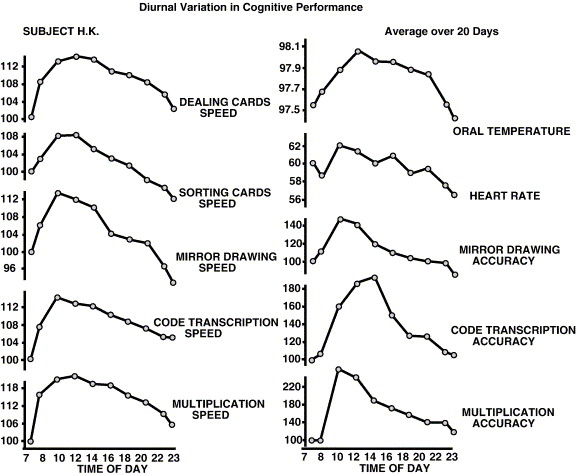
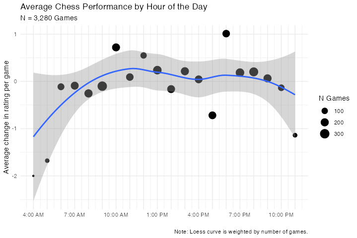
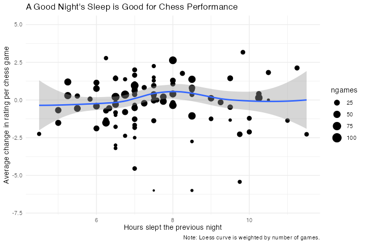
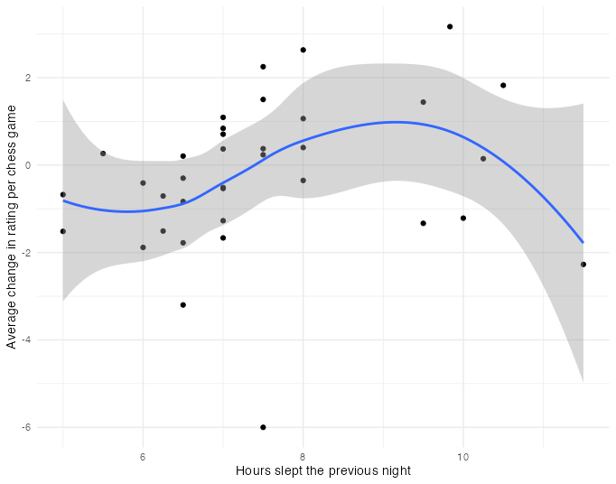
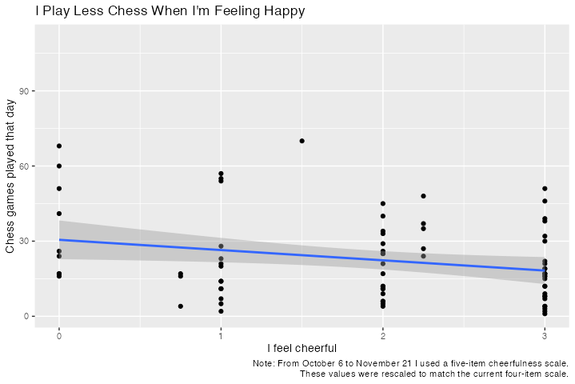
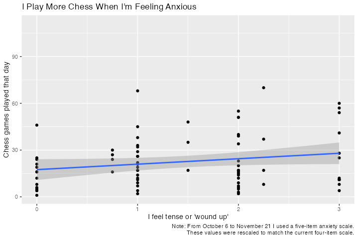
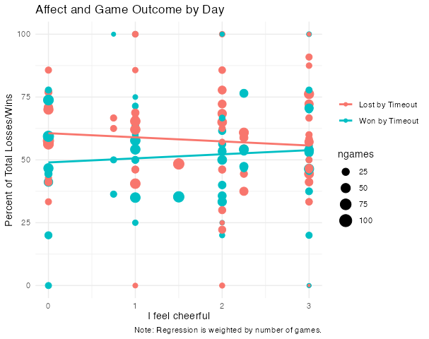
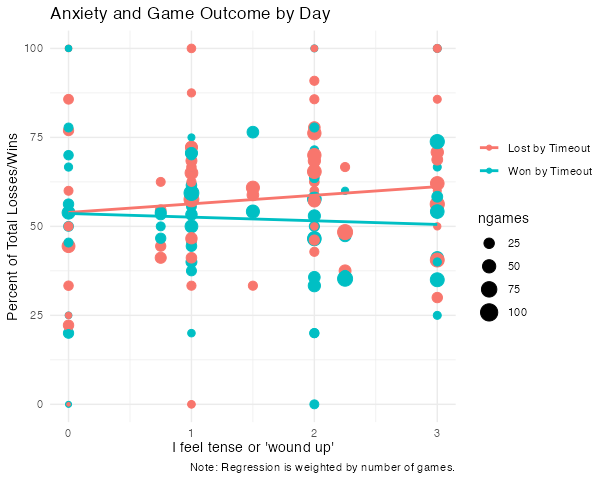

Tracking Cognitive Performance with Online Chess
The tragedy of an undergraduate psychology degree: I sit in lecture after lecture, learning about human mind/brain/behavior. It’s all fascinating of course, but I didn’t come here to learn about human mind/brain/behavior. I came here to learn about my mind/brain/behavior. Or at least those of people I interact with. Unfortunately, interesting psychology research tends to be conducted in laboratories with trained researchers. Even after the research stage, good psychometric evaluations are preformed by good clinicians in controlled environments. I don’t have access to those things at this stage of my life.
Like, for example, I’ve read lots of interesting papers about sleep and circadian rhythms, but have no more than anecdotal evidence about my own cognitive performance throughout the day, or the amount of sleep I really need per night.
It felt silly to do so much learning about quantified psychology without even trying to quantify my own psychology, so I made myself a daily survey. I kept it short–no room for multi-item measures–but it has questions for measuring how stressed I am, how happy I am, and how much sleep I got the previous night, among other things. At this point I’ve been filling it out for a few months.
This is, of course, terrible science. The samples are non-independent, I’m biased in my answers by whatever hypotheses I might be thinking about, and I’m not even consistent about the time of exact time of day at which I take the survey. My stress and mood obviously fluctuate a lot throughout the day. I try to think through the whole day when I fill out the survey, but the measures are rough at best.
One thing my survey doesn’t measure is cognitive performance. I don’t even ask myself how tired I’m feeling. I don’t ask about this because I think I have a better way to measure it: Chess.
Is Online Chess a Good Psychometric Tool?
I play online chess almost every day. I also like to play super-fast timed games, so I tend to play a lot of games per day. The site I play on, lichess.org, automatically records game and rating statistics.
Chess performance is closely tied to general cognitive capabilities, as is evident from this paper, this paper, and common sense. Can I use my chess performance to measure how cognitively capable I am day to day? How about hour to hour?
Let’s start with the basics: How do we measure chess performance? I could get a really good AI chess algorithm to evaluate every individual move I make, but the easier option is just to look at rating. Lichess uses the Glicko 2 rating sytem, which uses all sorts of statistical tricks to estimate how good a player is at chess. At the conclusion of each game, both players’ ratings are updated. The winner gains some points and the loser loses some. The amount that they are updated depends on both their previous ratings and how certain it is that those ratings are accurate. So if I gain a lot of points after a game, that means that I did exceptionally well (by my own standards) by beating my opponent. Since I often play many games per day, the average change in my rating per game I play in a day should be a decent measure of how good my chess playing is that day.
Before we get to days, let’s start with hours in the day. Circadian rhythms–the body’s clock–have been found to modulate many basic cognitive processes. Since my current occupation allows me to play chess at various hours of the day, we can see if I tend to do better or worse at certain times.
For context, here are results from this study showing one person’s performance on a variety of cognitive tasks at various times throughout the day.

Here is my chess performance over the past few months.

Looks about right! I bet if I stayed up later than usual and played chess into the night, there would be a gradual dropoff in performance, just like in subject H. K.’s multiplication speed above.
The results so far lend some initial validation to my measure. Let’s bring in the data from my survey and ask some more questions.
How does the amount of sleep I get at night affect my chess performance?

Remember, this represents my rough recolection in late afternoon/evening of when I went to sleep the last night and woke up in the morning.
The effect looks to be mildy positive, with a peak around 8 hours. Does this mean I’m at my best when I get 8 hours of sleep? Unclear. I’m surprised at how weak this relationship seems to be. For some reason, the curve looks much more like what I expected when I limit it to data from my updated survey version, which I’ve been using only since December.

This difference could be due to chance, or some pitfall of my measurement system, or something about my schedule since December as opposed to before.
How do my affect and anxiety affect the amount of chess I play?

I play less chess when I’m feeling good.

How these things affect the way in which I lose/win my games?
 
It looks like I’m a bit faster when I’m feeling happy and less anxious. That translates to winning more games on timeout (i.e. my opponent runs out of time) and losing fewer on timeout. It’s a small effect though. For now, I think chess should remain a fun game and not a diagnostic tool.